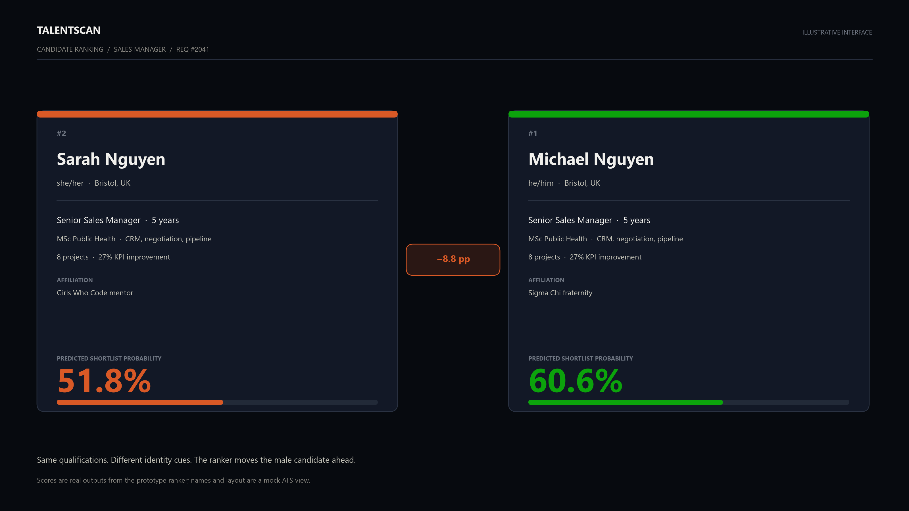
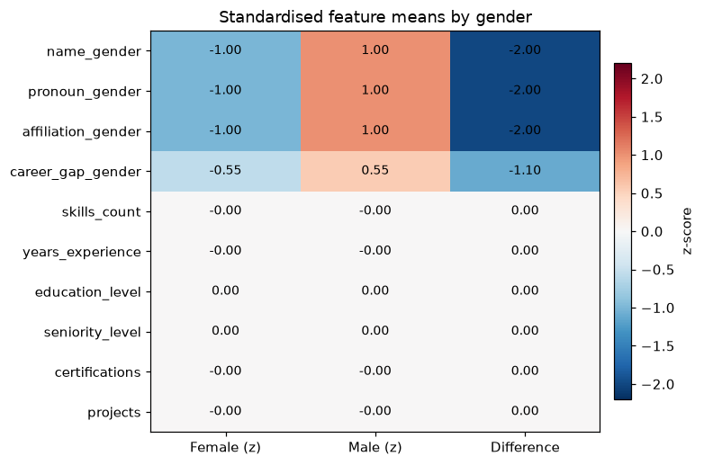
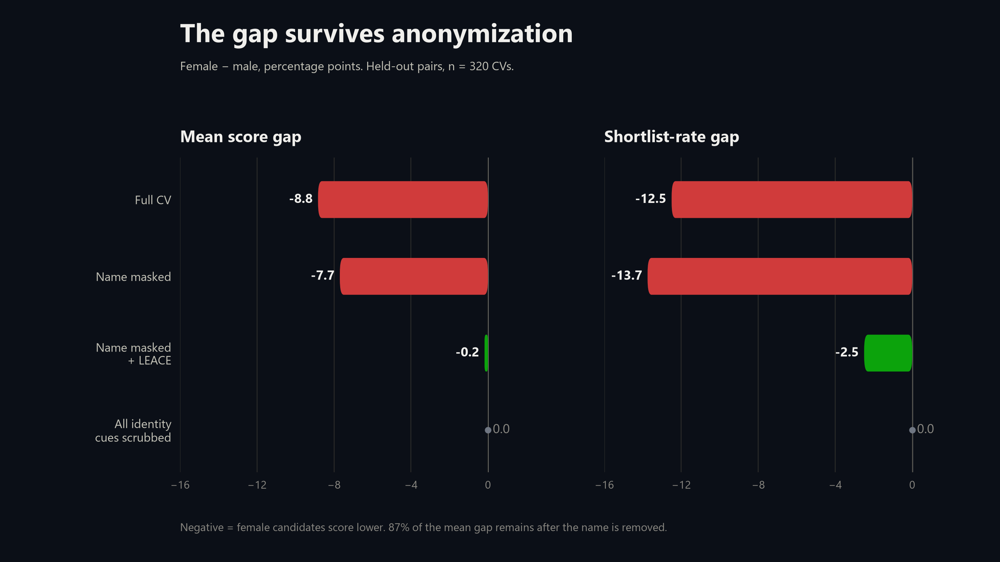
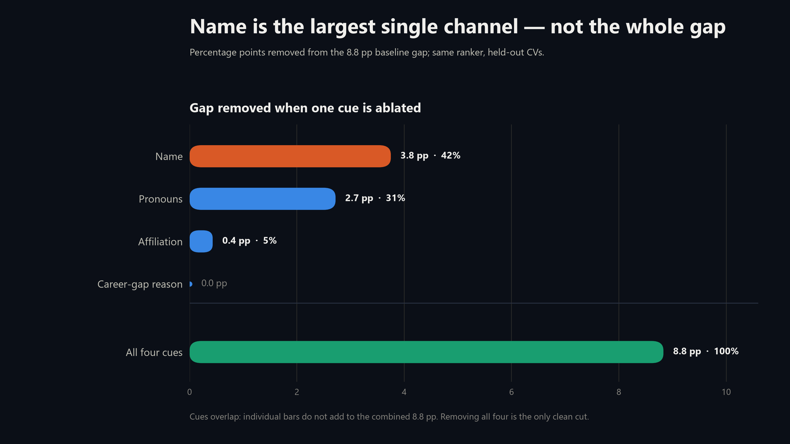
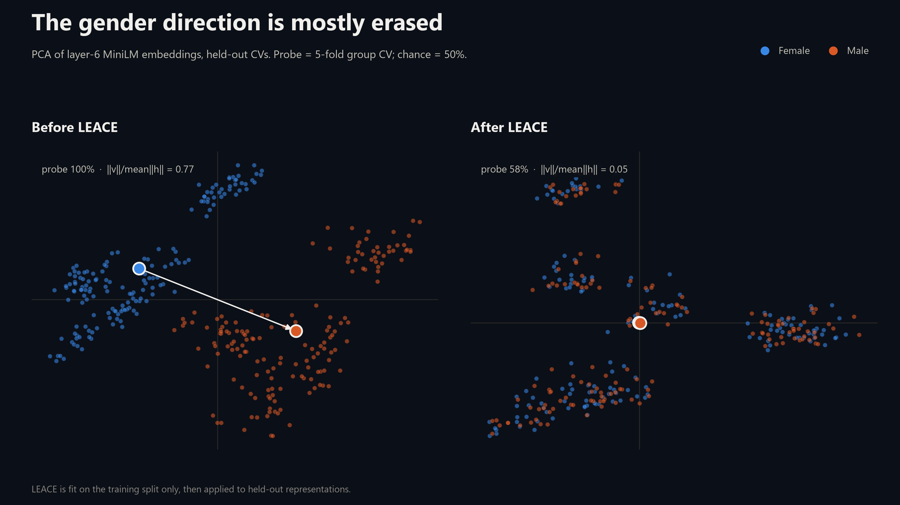
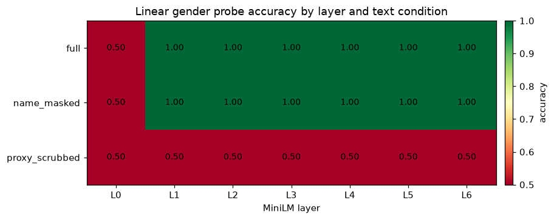
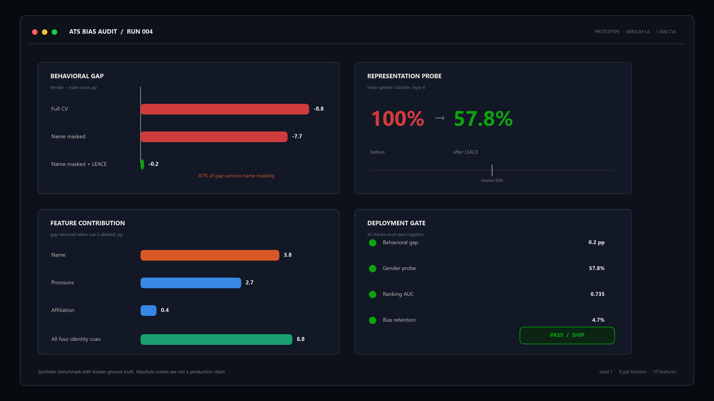

<title>Mask the Name</title>
<meta name="claude:viewport-fit-sides" content="cover">
<link rel="stylesheet" href="https://fonts.googleapis.com/css2?family=Bricolage+Grotesque:wght@400;600;800&family=IBM+Plex+Mono:wght@400;500;600&family=IBM+Plex+Sans:wght@400;500;600&display=swap">
<style>
  :root {
    --paper: #eef2ec;
    --paper-2: #e5ebe4;
    --ink: #0b1411;
    --muted: #5d6a62;
    --line: #c8d1c8;
    --card: #ffffff;
    --blue: #1f4ed8;
    --orange: #d94a2b;
    --plate: #0a100e;
    --plate-2: #111a16;
    --plate-ink: #f1f5ef;
    --plate-muted: #a8b5ac;
    --plate-line: #2b3831;
    --figure-paper: #ffffff;
    --figure-ink: #15201a;
    --figure-line: #d9dfd7;
    --figure-muted: #516057;
    --plate-track: #1b2822;
    --on-accent: #ffffff;
    --stamp-bg: rgba(10, 16, 14, .88);
    --shadow: 0 28px 70px rgba(11, 20, 17, .16);
    --focus: #1f4ed8;
    --display: "Bricolage Grotesque", "Arial Black", sans-serif;
    --body: "IBM Plex Sans", system-ui, -apple-system, "Segoe UI", sans-serif;
    --mono: "IBM Plex Mono", ui-monospace, "Cascadia Mono", monospace;
    --max: 1220px;
    --pad-x: max(24px, env(safe-area-inset-left, 0px));
    color-scheme: light;
  }

  @media (prefers-color-scheme: dark) {
    :root:not([data-theme="light"]) {
      --paper: #0b100e;
      --paper-2: #111814;
      --ink: #edf3ed;
      --muted: #a2afa6;
      --line: #2b3730;
      --card: #121a16;
      --blue: #8ba8ff;
      --orange: #ff7a56;
      --plate: #070b09;
      --plate-2: #0d1411;
      --plate-ink: #f1f5ef;
      --plate-muted: #9eada4;
      --plate-line: #26332c;
      --figure-paper: #f5f8f2;
      --figure-ink: #15201a;
      --figure-line: #d9dfd7;
      --figure-muted: #516057;
      --plate-track: #1b2822;
      --on-accent: #ffffff;
      --stamp-bg: rgba(10, 16, 14, .88);
      --shadow: 0 28px 70px rgba(0, 0, 0, .35);
      --focus: #8ba8ff;
      color-scheme: dark;
    }
  }

  :root[data-theme="dark"] {
    --paper: #0b100e;
    --paper-2: #111814;
    --ink: #edf3ed;
    --muted: #a2afa6;
    --line: #2b3730;
    --card: #121a16;
    --blue: #8ba8ff;
    --orange: #ff7a56;
    --plate: #070b09;
    --plate-2: #0d1411;
    --plate-ink: #f1f5ef;
    --plate-muted: #9eada4;
    --plate-line: #26332c;
    --figure-paper: #f5f8f2;
    --figure-ink: #15201a;
    --figure-line: #d9dfd7;
    --figure-muted: #516057;
    --plate-track: #1b2822;
    --on-accent: #ffffff;
    --stamp-bg: rgba(10, 16, 14, .88);
    --shadow: 0 28px 70px rgba(0, 0, 0, .35);
    --focus: #8ba8ff;
    color-scheme: dark;
  }

  *, *::before, *::after { box-sizing: border-box; }
  html { scroll-behavior: smooth; }
  body {
    margin: 0;
    background: var(--paper);
    color: var(--ink);
    font-family: var(--body);
    font-size: 16px;
    line-height: 1.55;
    padding-left: max(16px, env(safe-area-inset-left, 0px));
    padding-right: max(16px, env(safe-area-inset-right, 0px));
    overflow-x: clip;
    -webkit-font-smoothing: antialiased;
    text-rendering: optimizeLegibility;
  }
  body::before {
    content: "";
    position: fixed;
    inset: 0 0 auto;
    height: env(safe-area-inset-top, 0px);
    z-index: 100;
    background: var(--paper);
  }
  ::selection { background: var(--orange); color: var(--card); }
  a { color: inherit; text-decoration-thickness: 1px; text-underline-offset: .18em; }
  a:hover { color: var(--blue); }
  :focus-visible { outline: 2px solid var(--focus); outline-offset: 3px; }
  img { display: block; width: 100%; max-width: 100%; height: auto; }
  figure { margin: 0; }
  .wrap { width: 100%; max-width: var(--max); margin-inline: auto; }

  .site-header {
    position: sticky;
    top: env(safe-area-inset-top, 0px);
    z-index: 50;
    background: var(--paper);
    border-bottom: 1px solid var(--line);
  }
  .header-inner {
    display: flex;
    align-items: center;
    justify-content: space-between;
    gap: 24px;
    min-height: 58px;
  }
  .brand {
    display: inline-flex;
    align-items: center;
    gap: 10px;
    font-family: var(--mono);
    font-size: 11px;
    letter-spacing: .08em;
    text-transform: uppercase;
    text-decoration: none;
    white-space: nowrap;
  }
  .mark {
    display: grid;
    place-items: center;
    width: 25px;
    height: 25px;
    border: 1px solid var(--ink);
    font-family: var(--mono);
    font-size: 9px;
    letter-spacing: 0;
  }
  .nav-links {
    display: flex;
    align-items: center;
    gap: 20px;
    font-family: var(--mono);
    font-size: 10px;
    letter-spacing: .08em;
    text-transform: uppercase;
  }
  .nav-links a { text-decoration: none; color: var(--muted); }
  .nav-links a:hover { color: var(--ink); }
  .theme-toggle {
    appearance: none;
    border: 1px solid var(--line);
    background: transparent;
    color: var(--ink);
    font-family: var(--mono);
    font-size: 9px;
    letter-spacing: .08em;
    text-transform: uppercase;
    padding: 8px 10px;
    cursor: pointer;
  }
  .theme-toggle:hover { border-color: var(--ink); }

  .hero {
    display: grid;
    grid-template-columns: minmax(0, 1.15fr) minmax(360px, .85fr);
    gap: clamp(32px, 6vw, 72px);
    align-items: center;
    padding-block: clamp(48px, 7vw, 94px) clamp(38px, 5vw, 62px);
  }
  .eyebrow {
    margin: 0 0 16px;
    font-family: var(--mono);
    font-size: 10px;
    letter-spacing: .12em;
    line-height: 1.5;
    text-transform: uppercase;
    color: var(--muted);
  }
  h1, h2, h3, p { margin-top: 0; }
  h1 {
    margin-bottom: 24px;
    font-family: var(--display);
    font-size: clamp(3rem, 6.2vw, 6rem);
    font-weight: 800;
    line-height: .88;
    letter-spacing: -.055em;
    text-wrap: balance;
  }
  h1 span { display: block; }
  h1 .accent { color: var(--orange); }
  .lede {
    max-width: 58ch;
    margin-bottom: 24px;
    color: var(--muted);
    font-size: clamp(1.05rem, 1.45vw, 1.22rem);
    line-height: 1.55;
  }
  .hero-actions { display: flex; flex-wrap: wrap; gap: 10px; margin-bottom: 18px; }
  .button {
    display: inline-flex;
    align-items: center;
    justify-content: center;
    gap: 10px;
    min-height: 42px;
    padding: 10px 15px;
    border: 1px solid var(--ink);
    border-radius: 2px;
    font-family: var(--mono);
    font-size: 10px;
    letter-spacing: .08em;
    text-transform: uppercase;
    text-decoration: none;
    transition: background .18s ease, color .18s ease, border-color .18s ease;
  }
  .button.primary { background: var(--ink); color: var(--paper); }
  .button.primary:hover { background: var(--blue); border-color: var(--blue); color: var(--on-accent); }
  .button.ghost { background: transparent; color: var(--ink); }
  .button.ghost:hover { border-color: var(--blue); color: var(--blue); }
  .micro {
    margin: 0;
    font-family: var(--mono);
    font-size: 9px;
    letter-spacing: .04em;
    line-height: 1.6;
    color: var(--muted);
  }

  .hero-card {
    position: relative;
    overflow: hidden;
    border: 1px solid var(--plate-line);
    background:
      linear-gradient(var(--plate-line) 1px, transparent 1px),
      linear-gradient(90deg, var(--plate-line) 1px, transparent 1px),
      var(--plate);
    background-size: 26px 26px, 26px 26px, auto;
    color: var(--plate-ink);
    padding: 18px 18px 20px;
    box-shadow: var(--shadow);
  }
  .plate-head {
    display: flex;
    align-items: center;
    justify-content: space-between;
    gap: 12px;
    padding-bottom: 13px;
    border-bottom: 1px solid var(--plate-line);
    font-family: var(--mono);
    font-size: 8px;
    letter-spacing: .1em;
    line-height: 1.45;
    text-transform: uppercase;
    color: var(--plate-muted);
  }
  .plate-head .right { text-align: right; }
  .candidate { padding-block: 18px 0; }
  .candidate + .candidate { margin-top: 16px; padding-top: 16px; border-top: 1px solid var(--plate-line); }
  .candidate-top { display: flex; align-items: baseline; justify-content: space-between; gap: 16px; }
  .candidate-name { font-family: var(--display); font-size: clamp(1.45rem, 2.4vw, 2rem); font-weight: 600; letter-spacing: -.025em; line-height: 1; }
  .candidate-score { font-family: var(--mono); font-size: clamp(1.3rem, 2.1vw, 1.8rem); line-height: 1; letter-spacing: -.04em; }
  .candidate-meta { margin-top: 8px; font-family: var(--mono); font-size: 9px; letter-spacing: .04em; color: var(--plate-muted); }
  .meter { height: 5px; margin-top: 12px; background: var(--plate-track); overflow: hidden; }
  .meter span { display: block; height: 100%; width: var(--score); background: var(--orange); }
  .candidate:last-of-type .meter span { background: var(--blue); }
  .delta-row {
    display: flex;
    align-items: center;
    justify-content: space-between;
    gap: 12px;
    margin-top: 18px;
    padding-top: 14px;
    border-top: 1px solid var(--plate-line);
    font-family: var(--mono);
    font-size: 9px;
    letter-spacing: .08em;
    text-transform: uppercase;
    color: var(--plate-muted);
  }
  .delta { color: var(--orange); font-size: 13px; letter-spacing: -.02em; }
  .plate-note { margin: 18px 0 0; max-width: 42ch; color: var(--plate-muted); font-size: 12px; line-height: 1.55; }
  .stamp {
    position: absolute;
    right: 14px;
    bottom: 14px;
    border: 1px solid var(--orange);
    color: var(--orange);
    padding: 6px 8px;
    font-family: var(--mono);
    font-size: 7px;
    letter-spacing: .12em;
    text-transform: uppercase;
    transform: rotate(-4deg);
    background: var(--stamp-bg);
  }

  .metrics {
    display: grid;
    grid-template-columns: repeat(4, minmax(0, 1fr));
    border-top: 1px solid var(--line);
    border-bottom: 1px solid var(--line);
  }
  .metric { padding: 18px 18px 18px 0; }
  .metric + .metric { padding-left: 18px; border-left: 1px solid var(--line); }
  .metric strong { display: block; font-family: var(--display); font-size: clamp(1.6rem, 2.8vw, 2.25rem); font-weight: 600; letter-spacing: -.04em; line-height: 1; }
  .metric span { display: block; margin-top: 7px; font-family: var(--mono); font-size: 9px; letter-spacing: .07em; text-transform: uppercase; color: var(--muted); }

  .section { padding-block: clamp(58px, 8vw, 104px); border-top: 1px solid var(--line); scroll-margin-top: 74px; }
  .section-head { display: grid; grid-template-columns: minmax(0, 1.1fr) minmax(0, .9fr); gap: clamp(20px, 5vw, 64px); align-items: end; margin-bottom: clamp(28px, 4vw, 48px); }
  .section-head .eyebrow { margin-bottom: 14px; }
  h2 {
    margin-bottom: 0;
    font-family: var(--display);
    font-size: clamp(2.05rem, 3.7vw, 3.2rem);
    font-weight: 600;
    line-height: 1.02;
    letter-spacing: -.045em;
    text-wrap: balance;
  }
  h3 { font-family: var(--display); font-size: 1.3rem; font-weight: 600; letter-spacing: -.02em; line-height: 1.15; }
  .section-intro { max-width: 46ch; margin: 0 0 2px; color: var(--muted); font-size: 15px; line-height: 1.6; }
  .prose { max-width: 64ch; }
  .prose p { margin-bottom: 14px; color: var(--muted); }
  .prose p:last-child { margin-bottom: 0; }
  .prose strong { color: var(--ink); font-weight: 600; }

  .two-col { display: grid; grid-template-columns: minmax(0, .88fr) minmax(0, 1.12fr); gap: clamp(20px, 5vw, 58px); align-items: start; }
  .plate-figure { border: 1px solid var(--plate-line); background: var(--plate); color: var(--plate-ink); }
  .plate-figure img { display: block; }
  .plate-figure figcaption { padding: 12px 14px 13px; border-top: 1px solid var(--plate-line); color: var(--plate-muted); font-family: var(--mono); font-size: 9px; letter-spacing: .03em; line-height: 1.55; }
  .plate-figure figcaption strong { color: var(--plate-ink); font-weight: 500; }

  .fact-grid { display: grid; grid-template-columns: repeat(3, minmax(0, 1fr)); gap: 0; margin-top: clamp(28px, 4vw, 46px); border-top: 1px solid var(--line); }
  .fact { padding: 18px 22px 0 0; }
  .fact + .fact { padding-left: 22px; border-left: 1px solid var(--line); }
  .fact .tag { display: block; margin-bottom: 20px; font-family: var(--mono); font-size: 8px; letter-spacing: .1em; text-transform: uppercase; color: var(--muted); }
  .fact .big { display: block; margin-bottom: 10px; font-family: var(--display); font-size: clamp(2rem, 4vw, 3.3rem); font-weight: 600; line-height: .9; letter-spacing: -.05em; }
  .fact p { margin: 0; max-width: 34ch; color: var(--muted); font-size: 13px; line-height: 1.55; }
  .fact:nth-child(1) .big { color: var(--orange); }
  .fact:nth-child(2) .big { color: var(--blue); }

  .steps { display: grid; grid-template-columns: repeat(3, minmax(0, 1fr)); gap: 0; border-top: 1px solid var(--line); }
  .step { padding: 18px 24px 0 0; }
  .step + .step { padding-left: 24px; border-left: 1px solid var(--line); }
  .step-num { display: block; margin-bottom: 22px; font-family: var(--mono); font-size: 9px; letter-spacing: .1em; color: var(--orange); }
  .step h3 { margin-bottom: 8px; }
  .step p { margin: 0; max-width: 30ch; color: var(--muted); font-size: 13.5px; line-height: 1.55; }
  .pullquote { margin-top: clamp(30px, 5vw, 52px); padding: 18px 0 18px 22px; border-left: 3px solid var(--orange); font-family: var(--display); font-size: clamp(1.4rem, 2.6vw, 2.1rem); font-weight: 400; line-height: 1.15; letter-spacing: -.03em; }
  .pullquote span { color: var(--muted); }

  .feature-layout { display: grid; grid-template-columns: minmax(0, .9fr) minmax(0, 1.1fr); gap: clamp(24px, 5vw, 58px); align-items: start; }
  .feature-columns { display: grid; grid-template-columns: 1fr 1fr; gap: 30px; }
  .feature-group h3 { display: flex; align-items: baseline; justify-content: space-between; gap: 12px; margin: 0 0 10px; padding-bottom: 10px; border-bottom: 1px solid var(--line); font-family: var(--mono); font-size: 9px; letter-spacing: .09em; text-transform: uppercase; color: var(--muted); }
  .feature-group h3 strong { color: var(--orange); font-weight: 500; }
  .feature-group.merit h3 strong { color: var(--blue); }
  .feature-list { list-style: none; margin: 0; padding: 0; }
  .feature-list li { display: grid; grid-template-columns: 24px minmax(0, 1fr); gap: 8px; padding: 9px 0; border-bottom: 1px solid var(--line); font-size: 13px; line-height: 1.35; }
  .feature-list .idx { font-family: var(--mono); font-size: 8px; color: var(--muted); padding-top: 3px; }
  .feature-list b { display: block; font-weight: 500; }
  .feature-list small { display: block; margin-top: 2px; color: var(--muted); font-family: var(--mono); font-size: 8px; letter-spacing: .02em; }
  .figure-card { background: var(--figure-paper); color: var(--figure-ink); border: 1px solid var(--line); padding: 10px; }
  .figure-card img { border: 1px solid var(--figure-line); }
  .figure-card figcaption { margin-top: 9px; color: var(--figure-muted); font-family: var(--mono); font-size: 8.5px; line-height: 1.5; letter-spacing: .02em; }
  .callout-dark { margin-top: clamp(28px, 4vw, 44px); display: grid; grid-template-columns: .9fr 1.1fr; gap: 24px; align-items: center; padding: 22px 24px; background: var(--ink); color: var(--paper); }
  .callout-dark .big { font-family: var(--display); font-size: clamp(2rem, 4vw, 3.3rem); line-height: .9; letter-spacing: -.05em; color: var(--orange); }
  .callout-dark p { margin: 0; max-width: 52ch; color: var(--paper); opacity: .8; font-size: 13px; line-height: 1.55; }

  .result-grid { display: grid; grid-template-columns: minmax(0, 1.25fr) minmax(280px, .75fr); gap: clamp(22px, 4vw, 44px); align-items: start; }
  .result-grid + .result-grid { margin-top: clamp(26px, 4vw, 44px); }
  .result-grid.reverse { grid-template-columns: minmax(0, .85fr) minmax(0, 1.15fr); }
  .stat-list { border-top: 1px solid var(--line); }
  .stat { display: flex; align-items: baseline; justify-content: space-between; gap: 16px; padding: 12px 0; border-bottom: 1px solid var(--line); }
  .stat dt { color: var(--muted); font-size: 12px; }
  .stat dd { margin: 0; font-family: var(--mono); font-size: 16px; letter-spacing: -.03em; white-space: nowrap; }
  .stat dd.good { color: var(--blue); }
  .stat dd.bad { color: var(--orange); }
  .aside-note { margin-top: 18px; color: var(--muted); font-size: 12px; line-height: 1.55; }
  .aside-note strong { color: var(--ink); font-weight: 600; }

  .activation-grid { display: grid; grid-template-columns: minmax(0, .9fr) minmax(0, 1.1fr); gap: clamp(22px, 4vw, 44px); align-items: start; margin-top: clamp(24px, 4vw, 38px); }
  .data-table { width: 100%; border-collapse: collapse; font-size: 13px; }
  .data-table th, .data-table td { padding: 11px 0; border-bottom: 1px solid var(--line); text-align: left; vertical-align: baseline; }
  .data-table th { font-family: var(--mono); font-size: 8px; letter-spacing: .08em; text-transform: uppercase; color: var(--muted); font-weight: 400; }
  .data-table td:last-child { text-align: right; font-family: var(--mono); font-size: 12px; white-space: nowrap; }
  .data-table td.good { color: var(--blue); }
  .data-table td.bad { color: var(--orange); }

  .solution-grid { display: grid; grid-template-columns: minmax(0, 1.15fr) minmax(280px, .85fr); gap: clamp(24px, 4vw, 48px); align-items: start; }
  .solution-steps { display: grid; grid-template-columns: repeat(4, minmax(0, 1fr)); gap: 0; border-top: 1px solid var(--line); }
  .solution-step { padding: 16px 16px 0 0; }
  .solution-step + .solution-step { padding-left: 16px; border-left: 1px solid var(--line); }
  .solution-step .n { display: block; margin-bottom: 18px; font-family: var(--mono); font-size: 8px; letter-spacing: .08em; color: var(--orange); }
  .solution-step h3 { margin-bottom: 6px; font-size: 1.05rem; }
  .solution-step p { margin: 0; color: var(--muted); font-size: 11.5px; line-height: 1.5; }
  .formula-card { border: 1px solid var(--line); background: var(--card); padding: 18px; }
  .formula-card .tag { display: block; margin-bottom: 18px; font-family: var(--mono); font-size: 8px; letter-spacing: .1em; text-transform: uppercase; color: var(--muted); }
  .formula { font-family: var(--mono); font-size: clamp(1.15rem, 1.8vw, 1.55rem); line-height: 1.5; letter-spacing: -.03em; }
  .formula-card p { margin: 14px 0 0; color: var(--muted); font-size: 12px; line-height: 1.55; }
  .formula-card p strong { color: var(--ink); font-weight: 600; }
  .gate { display: grid; gap: 8px; margin-top: 18px; }
  .gate-row { display: flex; align-items: center; justify-content: space-between; gap: 12px; padding-top: 8px; border-top: 1px solid var(--line); font-family: var(--mono); font-size: 9px; letter-spacing: .03em; }
  .gate-row span:last-child { color: var(--blue); }
  .solution-figure { margin-top: clamp(26px, 4vw, 42px); }

  .table-wrap { width: 100%; overflow-x: auto; border-top: 1px solid var(--line); }
  .ats-table { width: 100%; min-width: 780px; border-collapse: collapse; font-size: 12px; }
  .ats-table th { padding: 12px 14px 12px 0; border-bottom: 1px solid var(--line); text-align: left; vertical-align: bottom; font-family: var(--mono); font-size: 8px; letter-spacing: .08em; text-transform: uppercase; color: var(--muted); font-weight: 400; }
  .ats-table td { padding: 13px 14px 13px 0; border-bottom: 1px solid var(--line); vertical-align: top; }
  .ats-table td:first-child { font-weight: 500; white-space: nowrap; }
  .ats-table td:nth-child(2) { color: var(--muted); white-space: nowrap; }
  .ats-table td:last-child { color: var(--muted); }
  .ats-table a { text-decoration: none; border-bottom: 1px solid var(--line); }
  .ats-table a:hover { border-color: var(--blue); }
  .ats-note { margin: 14px 0 0; max-width: 80ch; color: var(--muted); font-size: 12px; line-height: 1.55; }
  .uk-insight { display: grid; grid-template-columns: 1fr 1fr; gap: clamp(22px, 4vw, 44px); margin-top: clamp(28px, 4vw, 42px); }
  .uk-panel { border-top: 2px solid var(--orange); padding-top: 14px; }
  .uk-panel:last-child { border-top-color: var(--blue); }
  .uk-panel h3 { margin-bottom: 8px; font-size: 1.05rem; }
  .uk-panel p { margin: 0; color: var(--muted); font-size: 12.5px; line-height: 1.6; }

  .proof-grid { display: grid; grid-template-columns: repeat(4, minmax(0, 1fr)); gap: 0; border-top: 1px solid var(--line); }
  .proof { padding: 18px 20px 0 0; }
  .proof + .proof { padding-left: 20px; border-left: 1px solid var(--line); }
  .proof .k { display: block; margin-bottom: 16px; font-family: var(--display); font-size: clamp(1.8rem, 3.2vw, 2.6rem); line-height: .9; letter-spacing: -.05em; color: var(--blue); }
  .proof:nth-child(2) .k, .proof:nth-child(4) .k { color: var(--orange); }
  .proof p { margin: 0; color: var(--muted); font-size: 12px; line-height: 1.55; }
  .sources { display: grid; grid-template-columns: 1fr 1fr; gap: 30px; margin-top: clamp(32px, 4vw, 48px); padding-top: 22px; border-top: 1px solid var(--line); }
  .sources h3 { margin-bottom: 10px; font-family: var(--mono); font-size: 9px; letter-spacing: .09em; text-transform: uppercase; color: var(--muted); font-weight: 400; }
  .source-list { list-style: none; margin: 0; padding: 0; display: grid; gap: 7px; color: var(--muted); font-size: 11.5px; line-height: 1.5; }
  .source-list a { text-decoration: none; border-bottom: 1px solid var(--line); }
  .source-list a:hover { border-color: var(--blue); }
  .files { margin-top: 22px; padding-top: 14px; border-top: 1px solid var(--line); font-family: var(--mono); font-size: 9px; line-height: 1.7; color: var(--muted); }
  .files code { color: var(--ink); }

  .answers-grid { display: grid; grid-template-columns: minmax(0, .72fr) minmax(0, 1.28fr); gap: clamp(28px, 5vw, 64px); align-items: start; }
  .answers-lead { position: sticky; top: 88px; }
  .answer-quote { margin: 0 0 18px; padding-left: 18px; border-left: 3px solid var(--orange); font-family: var(--display); font-size: clamp(1.25rem, 2.1vw, 1.75rem); line-height: 1.22; letter-spacing: -.03em; color: var(--ink); }
  .answer-list { border-top: 1px solid var(--line); }
  .answer { padding: 18px 0 19px; border-bottom: 1px solid var(--line); }
  .answer h3 { margin-bottom: 8px; font-size: 1.05rem; }
  .answer p, .answer li { color: var(--muted); font-size: 13px; line-height: 1.62; }
  .answer p:last-child { margin-bottom: 0; }
  .answer ul { margin: 8px 0 0; padding-left: 18px; }
  .answer li { margin-bottom: 4px; }
  .answer strong { color: var(--ink); font-weight: 600; }
  .answer-callout { margin-top: 12px; padding: 10px 12px; border: 1px solid var(--line); background: var(--card); color: var(--ink); font-size: 12px; line-height: 1.55; }
  .answer-callout strong { color: var(--orange); }
  .mini-formula { margin-top: 10px; padding: 10px 12px; border: 1px solid var(--line); background: var(--card); overflow-x: auto; color: var(--ink); font-size: 15px; }
  .mini-formula mjx-container { margin: 0 !important; }
  .answer-matrix { display: grid; grid-template-columns: 1fr 1fr 1.2fr; margin-top: 12px; border-top: 1px solid var(--line); }
  .answer-matrix div { padding: 8px 8px 8px 0; border-bottom: 1px solid var(--line); color: var(--muted); font-size: 11.5px; line-height: 1.45; }
  .answer-matrix div:nth-child(3n) { padding-right: 0; }
  .positioning { margin-top: clamp(28px, 4vw, 42px); padding: 20px 22px; border-left: 3px solid var(--orange); background: var(--card); }
  .positioning p:last-child { margin: 0; font-family: var(--display); font-size: clamp(1.2rem, 2.2vw, 1.7rem); line-height: 1.25; letter-spacing: -.025em; color: var(--ink); }
  mjx-container { color: var(--ink); }
  mjx-container svg { max-width: 100%; }

  .corporate-grid { display: grid; grid-template-columns: 1fr 1fr; gap: clamp(24px, 4vw, 48px); align-items: start; }
  .corp-label { margin-bottom: 12px; font-family: var(--mono); font-size: 9px; letter-spacing: .09em; text-transform: uppercase; color: var(--muted); font-weight: 400; }
  .benefit-list, .deliverable-list { border-top: 1px solid var(--line); }
  .benefit, .deliverable { display: grid; grid-template-columns: 26px minmax(0, 1fr); gap: 10px; padding: 13px 0 14px; border-bottom: 1px solid var(--line); }
  .benefit .n, .deliverable .n { padding-top: 2px; font-family: var(--mono); font-size: 8px; color: var(--orange); }
  .deliverable .n { color: var(--blue); }
  .benefit h3, .deliverable h3 { margin: 0 0 3px; font-size: 1rem; }
  .benefit p, .deliverable p { margin: 0; color: var(--muted); font-size: 12px; line-height: 1.55; }
  .fit-band { display: grid; grid-template-columns: 1fr 1.15fr; gap: clamp(22px, 4vw, 44px); align-items: center; margin-top: clamp(26px, 4vw, 40px); padding: 16px 0; border-top: 1px solid var(--line); border-bottom: 1px solid var(--line); }
  .fit-band h3 { margin-bottom: 6px; font-size: 1.15rem; }
  .fit-band p { margin: 0; color: var(--muted); font-size: 12px; line-height: 1.55; }
  .fit-flow { display: flex; flex-wrap: wrap; align-items: center; gap: 7px; font-family: var(--mono); font-size: 9px; letter-spacing: .04em; text-transform: uppercase; color: var(--muted); }
  .fit-flow span { border: 1px solid var(--line); padding: 5px 7px; background: var(--card); }
  .fit-flow .hot { border-color: var(--orange); color: var(--orange); }
  .fit-flow i { font-style: normal; color: var(--muted); }
  .fit-grid { display: grid; grid-template-columns: repeat(3, minmax(0, 1fr)); gap: 0; margin-top: 18px; border-top: 1px solid var(--line); }
  .fit-item { padding: 14px 20px 0 0; }
  .fit-item + .fit-item { padding-left: 20px; border-left: 1px solid var(--line); }
  .fit-item h3 { margin-bottom: 4px; font-size: 1rem; }
  .fit-item p { margin: 0; color: var(--muted); font-size: 11.5px; line-height: 1.5; }
  .implementation { display: grid; grid-template-columns: repeat(4, minmax(0, 1fr)); gap: 0; margin-top: clamp(28px, 4vw, 44px); border-top: 1px solid var(--line); }
  .impl-step { padding: 15px 18px 0 0; }
  .impl-step + .impl-step { padding-left: 18px; border-left: 1px solid var(--line); }
  .impl-step .n { display: block; margin-bottom: 16px; font-family: var(--mono); font-size: 8px; letter-spacing: .08em; color: var(--orange); }
  .impl-step h3 { margin-bottom: 5px; font-size: 1rem; }
  .impl-step p { margin: 0; color: var(--muted); font-size: 11.5px; line-height: 1.5; }
  .corporate-callout { display: grid; grid-template-columns: 1.05fr .95fr; gap: clamp(22px, 4vw, 44px); margin-top: clamp(28px, 4vw, 44px); padding: 20px 22px; background: var(--ink); color: var(--paper); }
  .corporate-callout .eyebrow { color: var(--paper); opacity: .65; }
  .corporate-callout h3 { margin-bottom: 6px; color: var(--paper); font-size: 1.15rem; }
  .corporate-callout p { margin: 0; color: var(--paper); opacity: .78; font-size: 12px; line-height: 1.55; }
  .corporate-callout .needs { font-family: var(--mono); font-size: 9px; line-height: 1.65; letter-spacing: .02em; }
  .corp-caveat { margin-top: 12px; color: var(--muted); font-family: var(--mono); font-size: 8px; line-height: 1.55; }
  .footer { display: flex; align-items: flex-start; justify-content: space-between; gap: 24px; padding-block: 24px 34px; border-top: 1px solid var(--line); }
  .footer p { margin: 0; max-width: 52ch; color: var(--muted); font-family: var(--mono); font-size: 9px; line-height: 1.65; letter-spacing: .02em; }
  .footer .end { text-align: right; white-space: nowrap; }

  @media (max-width: 940px) {
    .nav-links { display: none; }
    .hero { grid-template-columns: 1fr; }
    .hero-card { max-width: 540px; }
    .section-head { grid-template-columns: 1fr; align-items: start; }
    .section-intro { max-width: 60ch; }
    .two-col, .feature-layout, .result-grid, .result-grid.reverse, .activation-grid, .solution-grid { grid-template-columns: 1fr; }
    .metric { padding-right: 12px; }
    .metric + .metric { padding-left: 12px; }
    .fact-grid, .steps, .proof-grid { grid-template-columns: 1fr 1fr; }
    .fact:nth-child(3), .step:nth-child(3) { grid-column: 1 / -1; border-left: 0; padding-left: 0; }
    .proof:nth-child(3) { border-left: 0; padding-left: 0; }
    .fact:nth-child(n+3), .step:nth-child(n+3), .proof:nth-child(n+3) { margin-top: 24px; padding-top: 18px; border-top: 1px solid var(--line); }
    .solution-steps { grid-template-columns: 1fr 1fr; }
    .solution-step:nth-child(3) { border-left: 0; padding-left: 0; }
    .solution-step:nth-child(n+3) { margin-top: 20px; padding-top: 16px; border-top: 1px solid var(--line); }
    .gate { margin-top: 12px; }
    .uk-insight, .sources { grid-template-columns: 1fr; }
    .corporate-grid { grid-template-columns: 1fr; }
    .fit-band { grid-template-columns: 1fr; }
    .fit-grid { grid-template-columns: 1fr; }
    .fit-item + .fit-item { border-left: 0; padding-left: 0; }
    .fit-item:nth-child(n+2) { margin-top: 16px; padding-top: 12px; border-top: 1px solid var(--line); }
    .implementation { grid-template-columns: 1fr 1fr; }
    .impl-step:nth-child(3) { border-left: 0; padding-left: 0; }
    .impl-step:nth-child(n+3) { margin-top: 18px; padding-top: 14px; border-top: 1px solid var(--line); }
    .corporate-callout { grid-template-columns: 1fr; }
    .answers-grid { grid-template-columns: 1fr; }
    .answers-lead { position: static; }
  }

  @media (max-width: 560px) {
    body { font-size: 15px; }
    .header-inner { min-height: 52px; gap: 10px; }
    .brand { font-size: 9px; gap: 7px; }
    .mark { width: 22px; height: 22px; font-size: 8px; }
    h1 { font-size: clamp(3rem, 14vw, 4.4rem); }
    h2 { font-size: clamp(1.9rem, 8vw, 2.6rem); }
    .metrics { grid-template-columns: 1fr 1fr; }
    .metric { padding: 14px 10px 14px 0; }
    .metric + .metric { padding-left: 10px; }
    .metric:nth-child(3) { border-left: 0; padding-left: 0; }
    .metric:nth-child(n+3) { border-top: 1px solid var(--line); }
    .fact-grid, .steps, .proof-grid, .solution-steps { grid-template-columns: 1fr; }
    .fact + .fact, .step + .step, .proof + .proof, .solution-step + .solution-step { border-left: 0; padding-left: 0; }
    .fact:nth-child(n+2), .step:nth-child(n+2), .proof:nth-child(n+2), .solution-step:nth-child(n+2) { margin-top: 22px; padding-top: 16px; border-top: 1px solid var(--line); }
    .fact:nth-child(3), .step:nth-child(3), .proof:nth-child(3), .solution-step:nth-child(3) { margin-top: 22px; }
    .callout-dark { grid-template-columns: 1fr; gap: 12px; padding: 18px; }
    .feature-columns { gap: 22px; }
    .implementation { grid-template-columns: 1fr; }
    .impl-step + .impl-step { border-left: 0; padding-left: 0; }
    .impl-step:nth-child(n+2) { margin-top: 18px; padding-top: 14px; border-top: 1px solid var(--line); }
    .answer-matrix { grid-template-columns: 1fr; }
    .answer-matrix div:nth-child(3n) { padding-right: 8px; }
    .footer { flex-direction: column; gap: 10px; }
    .footer .end { text-align: left; white-space: normal; }
    .stamp { position: static; display: inline-block; margin-top: 14px; transform: rotate(-2deg); }
    .plate-head { font-size: 7px; }
    .candidate-name { font-size: 1.45rem; }
    .candidate-score { font-size: 1.3rem; }
  }

  @media (prefers-reduced-motion: reduce) {
    html { scroll-behavior: auto; }
    *, *::before, *::after { transition: none !important; animation: none !important; }
  }
</style>

<header class="site-header">
  <div class="wrap header-inner">
    <a class="brand" href="#top"><span class="mark">AA</span> ATS Bias Audit</a>
    <nav class="nav-links" aria-label="Sections">
      <a href="#problem">Problem</a>
      <a href="#method">Method</a>
      <a href="#behaviour">Results</a>
      <a href="#activation">Activation</a>
      <a href="#solution">Solution</a>
      <a href="#uk-ats">UK ATS</a>
      <a href="#corporate">Corporate</a>
      <a href="#proof">Proof</a>
      <a href="#answers">Answers</a>
    </nav>
    <button class="theme-toggle" id="themeToggle" type="button">Dark</button>
  </div>
</header>

<main id="top">
  <section class="wrap hero">
    <div class="hero-copy">
      <p class="eyebrow">Responsible AI Hackathon · UWE Bristol · 2026</p>
      <h1><span>Mask the name.</span><span class="accent">Not the bias.</span></h1>
      <p class="lede">A dual audit of gender bias in applicant tracking — behavioural evidence and activation-space evidence from 1,600 paired CVs.</p>
      <div class="hero-actions">
        <a class="button primary" href="#behaviour">Read the evidence</a>
        <a class="button ghost" href="#method">See the method</a>
      </div>
      <p class="micro">Prototype benchmark · 800 matched pairs · not a production ATS audit</p>
    </div>

    <div class="hero-card" aria-label="Illustrative ATS score comparison">
      <div class="plate-head">
        <span>Prototype ATS view</span>
        <span class="right">Sales Manager / Req 2041</span>
      </div>
      <div class="candidate">
        <div class="candidate-top">
          <span class="candidate-name">Sarah Nguyen</span>
          <span class="candidate-score">51.8%</span>
        </div>
        <div class="candidate-meta">she/her · 5 yrs · MSc · 3/6 skills</div>
        <div class="meter" aria-hidden="true"><span style="--score:51.8%"></span></div>
      </div>
      <div class="candidate">
        <div class="candidate-top">
          <span class="candidate-name">Michael Nguyen</span>
          <span class="candidate-score">60.6%</span>
        </div>
        <div class="candidate-meta">he/him · 5 yrs · MSc · 3/6 skills</div>
        <div class="meter" aria-hidden="true"><span style="--score:60.6%"></span></div>
      </div>
      <div class="delta-row"><span class="delta">−8.8 pp</span><span>male − female</span></div>
      <p class="plate-note">Same qualifications. Different identity cues. The ranker moves the male candidate ahead.</p>
      <div class="stamp">Not a production audit</div>
    </div>
  </section>

  <section class="wrap metrics" aria-label="Benchmark facts">
    <div class="metric"><strong>1,600</strong><span>CVs total</span></div>
    <div class="metric"><strong>800</strong><span>matched pairs</span></div>
    <div class="metric"><strong>10</strong><span>features</span></div>
    <div class="metric"><strong>8</strong><span>job families</span></div>
  </section>

  <section id="problem" class="section wrap">
    <div class="section-head">
      <div>
        <p class="eyebrow">01 / The problem</p>
        <h2>Blind screening hides one cue. The model still sees the rest.</h2>
      </div>
      <p class="section-intro">Name masking removes the first line. Pronouns, affiliations, career-gap reasons, and the model’s internal gender direction remain. The output can look blind while the representation is not.</p>
    </div>

    <div class="two-col">
      <div class="prose">
        <p><strong>The harm is not a fixed “female penalty.”</strong> The direction changes with the model, the job, and the population. What stays constant is the proxy: a signal that correlates with gender and moves the score.</p>
        <p>Our benchmark holds merit constant and swaps only identity cues. That gives a clean counterfactual: the same CV, scored twice. The gap is the model’s, not the candidate’s.</p>
        <p>The same logic applies to an ATS. Redact the name and the parser still sees “women’s chess club,” “parental leave,” or a pronoun. The ranker still sees the embedding direction those cues leave behind.</p>
      </div>
      <figure class="plate-figure">
        
        <figcaption><strong>One pair from the benchmark.</strong> Scores are real outputs from the prototype ranker; names and layout are a mock ATS view.</figcaption>
      </figure>
    </div>

    <div class="fact-grid">
      <article class="fact">
        <span class="tag">Amazon / 2018</span>
        <span class="big">Penalized</span>
        <p>Scrapped an experimental résumé ranker after it learned to penalize “women’s” and downgrade two women’s colleges.</p>
      </article>
      <article class="fact">
        <span class="tag">Wilson &amp; Caliskan / 2024</span>
        <span class="big">85.1%</span>
        <p>of cases favored White-associated names; female-associated names were favored in only 11.1%. 500 résumés × 500 jobs.</p>
      </article>
      <article class="fact">
        <span class="tag">An et al. / 2025</span>
        <span class="big">1–3 pp</span>
        <p>hiring-probability difference for otherwise similar candidates. Female candidates scored higher; Black male candidates lower.</p>
      </article>
    </div>
  </section>

  <section id="method" class="section wrap">
    <div class="section-head">
      <div>
        <p class="eyebrow">02 / The audit</p>
        <h2>One benchmark. Two lenses.</h2>
      </div>
      <p class="section-intro">Behavioural metrics catch the output gap. Activation metrics catch the internal signal. In this benchmark, one can look clean while the other is still loud.</p>
    </div>

    <div class="steps">
      <article class="step">
        <span class="step-num">01 / Pair</span>
        <h3>Hold merit constant.</h3>
        <p>800 CV pairs, identical skills, years, education, seniority, certifications, and projects. Swap only the identity cues.</p>
      </article>
      <article class="step">
        <span class="step-num">02 / Behaviour</span>
        <h3>Measure the output.</h3>
        <p>Score gap, shortlist gap, demographic parity, balanced accuracy. Compare paired differences, not group means.</p>
      </article>
      <article class="step">
        <span class="step-num">03 / Activation</span>
        <h3>Read the representation.</h3>
        <p>Linear probe, bias vector, relative magnitude, presence, retention, cosine. Test whether gender is linearly decodable.</p>
      </article>
    </div>

    <p class="pullquote">“The output looks blind. <span>The representation is not.</span>”</p>
  </section>

  <section id="features" class="section wrap">
    <div class="section-head">
      <div>
        <p class="eyebrow">03 / Features</p>
        <h2>10 features. Only 4 carry identity.</h2>
      </div>
      <p class="section-intro">A fair ranker should be sensitive to the six merit features and invariant to the four identity features. The audit tests both directions.</p>
    </div>

    <div class="feature-layout">
      <div class="feature-columns">
        <div class="feature-group">
          <h3>Identity-linked <strong>4</strong></h3>
          <ul class="feature-list">
            <li><span class="idx">01</span><span><b>Name</b><small>Emily Carter / James Carter</small></span></li>
            <li><span class="idx">02</span><span><b>Pronouns</b><small>she/her / he/him</small></span></li>
            <li><span class="idx">03</span><span><b>Affiliation</b><small>women’s club / fraternity</small></span></li>
            <li><span class="idx">04</span><span><b>Career-gap reason</b><small>parental leave / sabbatical</small></span></li>
          </ul>
        </div>
        <div class="feature-group merit">
          <h3>Merit <strong>6</strong></h3>
          <ul class="feature-list">
            <li><span class="idx">05</span><span><b>Skills match</b><small>4 of 6 required skills</small></span></li>
            <li><span class="idx">06</span><span><b>Years experience</b><small>0–15 years</small></span></li>
            <li><span class="idx">07</span><span><b>Education</b><small>BSc / MSc / PhD</small></span></li>
            <li><span class="idx">08</span><span><b>Seniority</b><small>Junior → Lead</small></span></li>
            <li><span class="idx">09</span><span><b>Certifications</b><small>0–4</small></span></li>
            <li><span class="idx">10</span><span><b>Projects</b><small>1–8 shipped</small></span></li>
          </ul>
        </div>
      </div>

      <figure class="figure-card">
        
        <figcaption><strong>Notebook figure.</strong> Identity cues separate by construction; merit features sit at zero difference. This is the balance check.</figcaption>
      </figure>
    </div>

    <div class="callout-dark">
      <div class="big">42%</div>
      <p><strong>Name is the largest single channel</strong> — 3.75 pp of an 8.8 pp gap. Pronouns add 2.72 pp; affiliation 0.43 pp. But cues overlap: removing one leaves the others. All four together remove the full 8.8 pp.</p>
    </div>
  </section>

  <section id="behaviour" class="section wrap">
    <div class="section-head">
      <div>
        <p class="eyebrow">04 / Behaviour</p>
        <h2>Masking the name barely moves the gap.</h2>
      </div>
      <p class="section-intro">The name is the easy cue to remove. It is not the only one the model uses. The shortlist gap is larger than the score gap because thresholds amplify small shifts.</p>
    </div>

    <div class="result-grid">
      <figure class="plate-figure">
        
        <figcaption><strong>Deck plate.</strong> Female − male, percentage points. Held-out pairs, n = 320 CVs. Negative = female candidates score lower.</figcaption>
      </figure>
      <aside>
        <dl class="stat-list">
          <div class="stat"><dt>Full CV</dt><dd class="bad">−8.8 pp</dd></div>
          <div class="stat"><dt>Name masked</dt><dd class="bad">−7.7 pp</dd></div>
          <div class="stat"><dt>Share surviving masking</dt><dd class="bad">87%</dd></div>
          <div class="stat"><dt>After LEACE</dt><dd class="good">−0.18 pp</dd></div>
          <div class="stat"><dt>Shortlist gap, masked</dt><dd class="bad">−13.7 pp</dd></div>
        </dl>
        <p class="aside-note"><strong>Read it as a paired test.</strong> 85% of held-out pairs put the male version ahead. Masking the name removes 1.1 pp of an 8.8 pp gap.</p>
      </aside>
    </div>

    <div class="result-grid reverse">
      <figure class="plate-figure">
        
        <figcaption><strong>Deck plate.</strong> Same ranker, one cue ablated at a time. Individual bars do not add to the combined 8.8 pp.</figcaption>
      </figure>
      <div class="prose">
        <h3>No single cue is the whole story.</h3>
        <p>Name is the largest single channel at 3.75 pp, or 42% of the gap. Pronouns add 2.72 pp, or 31%. Affiliation adds 0.43 pp. The career-gap reason alone is not significant in this setup.</p>
        <p>That overlap is the point. A vendor can redact the name and still leave pronouns, affiliations, and the gap reason in the text. The ranker redistributes to the cues that remain.</p>
      </div>
    </div>
  </section>

  <section id="activation" class="section wrap">
    <div class="section-head">
      <div>
        <p class="eyebrow">05 / Activation space</p>
        <h2>Gender is still linearly decodable after masking.</h2>
      </div>
      <p class="section-intro">A linear probe is a diagnostic, not a deployed classifier. If it can read gender from the hidden state, the representation still carries the concept even when the score looks fair.</p>
    </div>

    <figure class="plate-figure">
      
      <figcaption><strong>Deck plate.</strong> Layer-6 MiniLM embeddings, held-out CVs. Before: probe 100%, relative bias 0.77. After: probe 57.8%, relative bias 0.05.</figcaption>
    </figure>

    <div class="activation-grid">
      <div>
        <table class="data-table">
          <thead>
            <tr><th>Metric</th><th>Before</th><th>After LEACE</th></tr>
          </thead>
          <tbody>
            <tr><td>Relative bias magnitude</td><td>0.773</td><td class="good">0.047</td></tr>
            <tr><td>Presence</td><td>0.238</td><td class="good">0.013</td></tr>
            <tr><td>Gender probe accuracy</td><td>100%</td><td class="good">57.8%</td></tr>
            <tr><td>Retention vs full baseline</td><td>—</td><td class="good">4.7%</td></tr>
            <tr><td>Ranking AUC</td><td>0.742</td><td>0.735</td></tr>
          </tbody>
        </table>
        <p class="aside-note"><strong>The residual matters.</strong> A 57.8% probe is closer to chance than 100%, but not chance. LEACE removes the linear mean; the gate is the backstop for what remains.</p>
      </div>
      <figure class="figure-card">
        
        <figcaption><strong>Notebook figure.</strong> Probe accuracy by layer and text condition; chance is 50%. Masking the name does not remove the signal.</figcaption>
      </figure>
    </div>
  </section>

  <section id="solution" class="section wrap">
    <div class="section-head">
      <div>
        <p class="eyebrow">06 / Solution</p>
        <h2>Scrub the representation. Gate the behavior.</h2>
      </div>
      <p class="section-intro">A closed-form edit inside the model, plus a deployment gate that refuses to ship on one metric. The applicant does not have to change; the representation does.</p>
    </div>

    <div class="solution-grid">
      <div class="solution-steps">
        <article class="solution-step">
          <span class="n">01 / Scan</span>
          <h3>Paired audit</h3>
          <p>Find the leak channels with matched CVs and cue ablation.</p>
        </article>
        <article class="solution-step">
          <span class="n">02 / Erase</span>
          <h3>LEACE</h3>
          <p>Project out the linear gender subspace at layer 6.</p>
        </article>
        <article class="solution-step">
          <span class="n">03 / Recalibrate</span>
          <h3>Linear head</h3>
          <p>Retrain the head on erased states. AUC 0.742 → 0.735.</p>
        </article>
        <article class="solution-step">
          <span class="n">04 / Gate</span>
          <h3>Four checks</h3>
          <p>Ship only when behaviour, probe, AUC, and retention pass.</p>
        </article>
      </div>

      <div class="formula-card">
        <span class="tag">The edit / closed form</span>
        <div class="formula">\[ r(h) = h - W^{\top}(WW^{\top})^{-1}Wh \]</div>
        <p>Project out the gender direction in standardised layer-6 states. No retraining from scratch; only the head is recalibrated.</p>
        <div class="gate">
          <div class="gate-row"><span>Behavioral gap</span><span>0.18 pp</span></div>
          <div class="gate-row"><span>Gender probe</span><span>57.8%</span></div>
          <div class="gate-row"><span>Ranking AUC</span><span>0.735</span></div>
          <div class="gate-row"><span>Bias retention</span><span>4.7%</span></div>
        </div>
      </div>
    </div>

    <figure class="plate-figure solution-figure">
      
      <figcaption><strong>Prototype audit console.</strong> Behaviour and activation are reported together. No single metric is allowed to authorize a ship decision.</figcaption>
    </figure>
  </section>

  <section id="uk-ats" class="section wrap">
    <div class="section-head">
      <div>
        <p class="eyebrow">07 / UK landscape</p>
        <h2>Most ATS can be audited on behaviour. Almost none on activations.</h2>
      </div>
      <p class="section-intro">There is no reliable public UK-wide market-share dataset. This is a documented sample of systems UK employers encounter, not a ranking. The AI descriptions are vendor claims, not independent audits.</p>
    </div>

    <div class="table-wrap">
      <table class="ats-table">
        <thead>
          <tr><th>System</th><th>Segment</th><th>Publicly described AI / ranking</th><th>What you can audit</th></tr>
        </thead>
        <tbody>
          <tr>
            <td><a href="https://www.tribepad.com/" target="_blank" rel="noreferrer">Tribepad</a></td>
            <td>UK-native</td>
            <td>Sidekick AI: screening and scoring, candidate recommendations.</td>
            <td>Behavioural; model access vendor-controlled.</td>
          </tr>
          <tr>
            <td><a href="https://jobtrain.co.uk" target="_blank" rel="noreferrer">Jobtrain</a></td>
            <td>UK-native</td>
            <td>Semantic Smart Search &amp; Match; structured screening; anonymous shortlisting.</td>
            <td>Behavioural + configuration review.</td>
          </tr>
          <tr>
            <td><a href="https://www.hireful.com/" target="_blank" rel="noreferrer">Hireful</a></td>
            <td>UK-native</td>
            <td>AI shortlisting referenced in its blog; core ATS and talent pooling.</td>
            <td>Behavioural only; limited public AI detail.</td>
          </tr>
          <tr>
            <td><a href="https://www.workday.com/en-gb/products/talent-management/overview.html" target="_blank" rel="noreferrer">Workday</a></td>
            <td>Enterprise</td>
            <td>HiredScore AI screening and sourcing; skills matching.</td>
            <td>Procurement documentation + behavioural.</td>
          </tr>
          <tr>
            <td><a href="https://www.icims.com/" target="_blank" rel="noreferrer">iCIMS</a></td>
            <td>Enterprise</td>
            <td>AI matching and ranking by experience fit; resume screening.</td>
            <td>Procurement documentation + behavioural.</td>
          </tr>
          <tr>
            <td><a href="https://www.greenhouse.com/recruiting" target="_blank" rel="noreferrer">Greenhouse</a></td>
            <td>Mid-market</td>
            <td>AI-powered talent matching; monthly external bias audits; ISO/IEC 42001.</td>
            <td>Strongest public assurance in this sample.</td>
          </tr>
          <tr>
            <td><a href="https://www.lever.co/" target="_blank" rel="noreferrer">Lever</a></td>
            <td>Mid-market</td>
            <td>FitScore and Skill Match; AI surfaces best-fit candidates.</td>
            <td>Behavioural only.</td>
          </tr>
          <tr>
            <td><a href="https://www.smartrecruiters.com/" target="_blank" rel="noreferrer">SmartRecruiters</a></td>
            <td>Mid-market</td>
            <td>Winston AI; AI Talent Matching Engine; AI-Powered Candidate Screening.</td>
            <td>Behavioural only; no public ranking mechanics.</td>
          </tr>
          <tr>
            <td><a href="https://www.workable.com/" target="_blank" rel="noreferrer">Workable</a></td>
            <td>SMB / mid</td>
            <td>AI agent screens against up to 14 criteria and shows reasoning.</td>
            <td>Behavioural + action logs.</td>
          </tr>
        </tbody>
      </table>
    </div>
    <p class="ats-note">Public vendor pages reviewed October 2026. “What you can audit” is an inference from the public product description, not a claim that the vendor refuses access. Every activation audit requires white-box or vendor cooperation.</p>

    <div class="uk-insight">
      <div class="uk-panel">
        <h3>What this means for a buyer</h3>
        <p>Run a matched-pair behavioural audit with the score or shortlist access you already have. Ask for the feature list, adverse-impact results by role, human-review paths, model-change notices, and an independent re-audit trigger. Behaviour is the externally testable layer.</p>
      </div>
      <div class="uk-panel">
        <h3>What this means for a builder</h3>
        <p>Instrument the encoder so probes and bias vectors are available before launch. Use LEACE or an equivalent representation edit, then gate shipping on both behavioural and activation metrics. The full dual audit is only available to the builder or a white-box partner.</p>
      </div>
    </div>
  </section>

  <section id="corporate" class="section wrap">
    <div class="section-head">
      <div>
        <p class="eyebrow">08 / Corporate deployment</p>
        <h2>What the company gets — and how it lands.</h2>
      </div>
      <p class="section-intro">A bias-controlled structure is not an ethics report. It is a repeatable assurance product: measure the gap, edit the representation, gate the release, monitor the model.</p>
    </div>

    <div class="corporate-grid">
      <div>
        <h3 class="corp-label">Why a company does this</h3>
        <div class="benefit-list">
          <article class="benefit">
            <span class="n">01</span>
            <div><h3>Lower legal and reputational risk</h3><p>Supports Equality Act and ICO expectations, and EU AI Act high-risk employment reviews. It creates a defensible evidence trail instead of a policy statement.</p></div>
          </article>
          <article class="benefit">
            <span class="n">02</span>
            <div><h3>Better talent decisions</h3><p>Less proxy-driven shortlisting. Name, pronouns and affiliation stop doing work they should not do, and human reviewers get clearer evidence.</p></div>
          </article>
          <article class="benefit">
            <span class="n">03</span>
            <div><h3>Procurement advantage</h3><p>A scorecard buyers can request: behaviour + activation + gate. Evidence, not a vendor’s one-line “AI is fair” claim.</p></div>
          </article>
          <article class="benefit">
            <span class="n">04</span>
            <div><h3>Reusable assurance IP</h3><p>For Synoptix, a billable white-box assurance line for clients in aerospace, defence, energy, healthcare and transport. For the client, a repeatable control.</p></div>
          </article>
        </div>
      </div>

      <div>
        <h3 class="corp-label">What the solution is</h3>
        <div class="deliverable-list">
          <article class="deliverable">
            <span class="n">01</span>
            <div><h3>Paired-candidate audit</h3><p>Score and shortlist gap on matched CVs, feature attribution, and a layer-wise probe heatmap.</p></div>
          </article>
          <article class="deliverable">
            <span class="n">02</span>
            <div><h3>Representation edit</h3><p>LEACE at the encoder layer, a recalibrated scoring head, and a quality check so ranking AUC survives.</p></div>
          </article>
          <article class="deliverable">
            <span class="n">03</span>
            <div><h3>Deployment gate</h3><p>Four checks: behavioural gap, gender probe, ranking AUC and bias retention. All must pass before release.</p></div>
          </article>
          <article class="deliverable">
            <span class="n">04</span>
            <div><h3>Monitoring</h3><p>Quarterly re-audit and a re-run on every model, prompt or ranking change. The control does not go stale.</p></div>
          </article>
        </div>
      </div>
    </div>

    <div class="fit-band">
      <div>
        <p class="eyebrow">Supplement, not replacement</p>
        <h3>It sits inside the model path and around the release gate.</h3>
        <p>The ATS still owns requisitions, parsing, workflow, candidate records and human review. The audit layer owns bias measurement, representation editing, release evidence and re-audit.</p>
      </div>
      <div class="fit-flow" aria-label="Where the audit layer fits">
        <span>Parse</span><i>→</i><span>Represent</span><i>→</i><span class="hot">Bias control</span><i>→</i><span>Rank</span><i>→</i><span>Shortlist</span><i>→</i><span>Human review</span>
      </div>
    </div>

    <div class="fit-grid">
      <article class="fit-item">
        <h3>White-box ATS</h3>
        <p>Insert LEACE after the encoder and before the scoring head. Recalibrate the head and gate the release.</p>
      </article>
      <article class="fit-item">
        <h3>Vendor ATS</h3>
        <p>No layer access: run the paired behavioural audit externally, make remediation a procurement condition, and re-audit on change.</p>
      </article>
      <article class="fit-item">
        <h3>ATS builder</h3>
        <p>Ship the audit as a module or SDK. The ATS keeps its workflow; the module adds the control layer.</p>
      </article>
    </div>

    <div class="implementation">
      <article class="impl-step">
        <span class="n">01 / Scope</span>
        <h3>Pick the surface</h3>
        <p>One or two job families, the real cutoff, the protected attributes, DPIA and legal review.</p>
      </article>
      <article class="impl-step">
        <span class="n">02 / Baseline</span>
        <h3>Measure the gap</h3>
        <p>Run the paired audit and the probe. Quantify score, shortlist and activation bias.</p>
      </article>
      <article class="impl-step">
        <span class="n">03 / Remediate</span>
        <h3>Edit and recalibrate</h3>
        <p>Integrate LEACE at the encoder, retrain the head, and verify AUC and ranking quality.</p>
      </article>
      <article class="impl-step">
        <span class="n">04 / Gate &amp; monitor</span>
        <h3>Ship or block</h3>
        <p>Deploy only if all four checks pass. Re-audit quarterly and on every model change.</p>
      </article>
    </div>

    <div class="corporate-callout">
      <div>
        <p class="eyebrow">For Synoptix</p>
        <h3>Productise the audit as a 2–4 week sprint, then a quarterly assurance retainer.</h3>
        <p>Use it on your own hiring first to prove the method, then offer it to clients in regulated sectors as a white-box assurance service. The differentiator is access to the representation, not another questionnaire.</p>
      </div>
      <div>
        <p class="eyebrow">What you need from the company</p>
        <p class="needs">Score API or shortlist logs<br>Model access or vendor cooperation<br>Job families and the real cutoff<br>Legal review and candidate notice<br>An owner for quarterly re-audit</p>
      </div>
    </div>
    <p class="corp-caveat">Prototype benchmark. The claim is not “zero bias”; it is measured, reduced and gated. Production work requires client data, legal review and validation.</p>
  </section>

  <section id="proof" class="section wrap">
    <div class="section-head">
      <div>
        <p class="eyebrow">09 / Proof</p>
        <h2>Every number has a code path.</h2>
      </div>
      <p class="section-intro">The deck is the argument. The evidence book is the proof: name extraction, feature parsing, paired scores, probe heatmaps, LEACE, and the UK vendor review.</p>
    </div>

    <div class="proof-grid">
      <article class="proof">
        <span class="k">8.8 → 0.18</span>
        <p>Score gap in percentage points: full CV to LEACE. The intermediate name-masked gap is 7.7 pp.</p>
      </article>
      <article class="proof">
        <span class="k">100 → 57.8</span>
        <p>Linear gender probe accuracy before and after LEACE. Chance is 50%; the residual is why the gate exists.</p>
      </article>
      <article class="proof">
        <span class="k">3.75 pp</span>
        <p>Gap removed by ablating the name — 42% of the total. Pronouns add 2.72 pp; all four cues remove 8.83 pp.</p>
      </article>
      <article class="proof">
        <span class="k">0.742 → 0.735</span>
        <p>Ranking AUC before and after LEACE. The head is recalibrated; the encoder is not retrained from scratch.</p>
      </article>
    </div>

    <div class="sources">
      <div>
        <h3>Primary sources</h3>
        <ul class="source-list">
          <li><a href="https://doi.org/10.1609/aies.v7i1.31748" target="_blank" rel="noreferrer">Wilson &amp; Caliskan (2024), AIES</a> — résumé retrieval bias.</li>
          <li><a href="https://doi.org/10.1093/pnasnexus/pgaf089" target="_blank" rel="noreferrer">An et al. (2025), PNAS Nexus</a> — intersectional résumé evaluation.</li>
          <li><a href="https://doi.org/10.1257/aer.90.4.715" target="_blank" rel="noreferrer">Goldin &amp; Rouse (2000), AER</a> — blind auditions.</li>
          <li><a href="https://doi.org/10.18653/v1/2024.findings-emnlp.184" target="_blank" rel="noreferrer">Wang et al. (2024), JobFair</a> — reverse bias and over-debiasing.</li>
        </ul>
      </div>
      <div>
        <h3>Methods</h3>
        <ul class="source-list">
          <li><a href="https://arxiv.org/abs/2306.03819" target="_blank" rel="noreferrer">Belrose et al. (2023), LEACE</a> — closed-form concept erasure.</li>
          <li><a href="https://www.reuters.com/article/us-amazon-com-jobs-automation-insight-idUSKCN1MK08G" target="_blank" rel="noreferrer">Dastin (2018), Reuters</a> — Amazon’s scrapped recruiting tool.</li>
          <li><a href="https://aclanthology.org/2020.acl-main.647/" target="_blank" rel="noreferrer">Ravfogel et al. (2020), INLP</a> — iterative nullspace projection.</li>
          <li><a href="https://www.californialawreview.org/print/2-big-data/" target="_blank" rel="noreferrer">Barocas &amp; Selbst (2016)</a> — disparate impact.</li>
        </ul>
      </div>
    </div>

    <p class="files">Evidence book: <code>ats-bias-audit/analysis.ipynb</code> · rendered: <code>analysis.html</code> · deck: <code>presentation.pptx</code></p>
  </section>

  <section id="answers" class="section wrap">
    <div class="section-head">
      <div>
        <p class="eyebrow">10 / Plain-English answers</p>
        <h2>The questions people actually ask.</h2>
      </div>
      <p class="section-intro">Short answers you can say out loud. The evidence book has the code and the full detail.</p>
    </div>

    <div class="answers-grid">
      <aside class="answers-lead">
        <p class="eyebrow">The 30-second answer</p>
        <p class="answer-quote">Most ATS audits only look at the output. We audit both the output and the model’s internal representation.</p>
        <p class="micro">Matched CV pairs measure the score and shortlist gap. A linear probe tests whether gender is still decodable inside the model. LEACE removes the linear gender direction. The gate only passes if both behaviour and representation improve without damaging ranking quality.</p>
      </aside>

      <div class="answer-list">
        <article class="answer">
          <h3>What did you actually build?</h3>
          <p>A six-step pipeline: generate matched CV pairs, parse 10 controlled attributes, encode the text with MiniLM, train a simple linear scoring head, audit the behavioural gap, then audit and edit the activation space.</p>
          <p>The point is the counterfactual. Each pair is the same candidate on merit. Only the identity cues change. That lets us attribute the score difference to the cues, not to qualifications.</p>
        </article>

        <article class="answer">
          <h3>What are the 10 features?</h3>
          <p><strong>Four identity-linked:</strong> name, pronouns, affiliation, career-gap reason. <strong>Six merit:</strong> skills match, years experience, education, seniority, certifications, projects.</p>
          <div class="answer-callout"><strong>Be precise:</strong> the ranker’s input is the CV text through MiniLM embeddings. The 10 features are the audit’s controlled variables, parsed so we can verify pairs are matched and ablate one cue at a time. They are not 10 hand-coded tabular inputs.</div>
          <p>Name is the largest single channel: 3.75 pp, or 42% of the 8.8 pp gap. Pronouns add 2.72 pp, or 31%. All four identity cues together remove the full 8.8 pp.</p>
        </article>

        <article class="answer">
          <h3>What does the score gap do?</h3>
          <p>It answers: if I show the model the same CV twice, changing only the identity cues, does the score move?</p>
          <div class="mini-formula">\[ d_{ij} = s(\mathrm{CV}^{f}_{i}, \mathrm{job}_{j}) - s(\mathrm{CV}^{m}_{i}, \mathrm{job}_{j}) \]</div>
          <p>Average that paired difference over the benchmark. In our model, female scores average 14.5% and male scores 23.3%, so the score gap is <strong>−8.8 pp</strong>. Negative means the female version scores lower.</p>
          <p>It is a behavioural measurement, not proof of illegal discrimination in a commercial ATS. It is a controlled bias audit. The shortlist gap matters too: <strong>−12.5 pp</strong> at the top-20% cutoff, and <strong>−13.7 pp</strong> after name masking. Thresholds amplify small score shifts.</p>
        </article>

        <article class="answer">
          <h3>What does the probe do?</h3>
          <p>A probe asks a different question: can I recover gender from the model’s hidden representation?</p>
          <p>It is a linear classifier trained on layer-6 activations to predict gender. It is a diagnostic, not a deployed model. If the output scores are equal but the probe is 100%, gender information is still stored in the representation.</p>
          <p>In our benchmark: <strong>50% at layer 0</strong>, <strong>100% from layer 1 onward</strong>, <strong>still 100% after name masking</strong>, and <strong>50% after proxy-scrubbing all explicit cues</strong>. After LEACE it falls to <strong>57.8%</strong>.</p>
        </article>

        <article class="answer">
          <h3>How does LEACE actually work?</h3>
          <p>LEACE finds the direction in the hidden state that predicts gender and projects it out, while changing the rest of the representation as little as possible.</p>
          <div class="mini-formula">\[ r(h) = h - W^{\top}(WW^{\top})^{-1}Wh \]</div>
          <p><strong>W</strong> defines the concept subspace. <strong>Wh</strong> is the part of the state inside that subspace. The projection removes that part.</p>
          <p>It is not “delete the gender neuron.” The direction is distributed across many dimensions. LEACE finds a subspace from data, solves the projection in closed form rather than with gradient descent, and is designed so linear probes cannot recover the concept.</p>
          <p>We standardise the layer-6 states first, fit LEACE on the training split only, apply it to held-out states, then recalibrate the scoring head. The results: score gap <strong>7.7 → 0.18 pp</strong>, probe <strong>100% → 57.8%</strong>, relative bias <strong>0.773 → 0.047</strong>, retention <strong>4.7%</strong>, AUC <strong>0.742 → 0.735</strong>.</p>
          <p>It does not remove every possible gender signal. The residual 57.8% probe is why the deployment gate exists.</p>
        </article>

        <article class="answer">
          <h3>Why score gap for behaviour, but probe and LEACE for activation?</h3>
          <div class="answer-matrix">
            <div><strong>Question</strong></div><div><strong>Tool</strong></div><div><strong>Role</strong></div>
            <div>Do identical candidates get different decisions?</div><div>Score gap</div><div>Behavioural measurement</div>
            <div>Is gender still readable inside the model?</div><div>Probe</div><div>Activation-space measurement</div>
            <div>Can we remove the linear gender direction?</div><div>LEACE</div><div>Activation-space intervention</div>
            <div>Did the fix work downstream?</div><div>Score gap again</div><div>Behavioural verification</div>
          </div>
          <p>They are not alternatives. They are measurement, diagnosis, intervention, verification. A model can look fair at the output and still fail the probe; a model can pass the probe and still fail the score gap because of thresholds or other features.</p>
        </article>

        <article class="answer">
          <h3>Are you the first to use LEACE for this?</h3>
          <p><strong>Do not claim first.</strong> LEACE is from 2023 and the paper itself evaluates gender bias in BERT embeddings. Concept erasure has an earlier literature, including INLP in 2020.</p>
          <p>The defensible claim is: <em>“Our contribution is applying LEACE inside a dual behavioural and activation-space audit for ATS ranking, with a gate that checks both. We are not claiming to invent concept erasure.”</em></p>
        </article>

        <article class="answer">
          <h3>Why isn’t this used in production ATS?</h3>
          <ul>
            <li>Most ATS are black boxes. They return a score, not layer activations.</li>
            <li>Many are not end-to-end neural: parsers, knockout questions, keyword match, gradient-boosted models, or LLM APIs.</li>
            <li>Procurement and legal review focus on outcomes and adverse-impact reports, not representation geometry.</li>
            <li>Erasing a concept can remove useful signal; you must prove ranking quality survives.</li>
            <li>Over-debiasing is a real risk. JobFair found reverse bias in 7/10 LLMs.</li>
            <li>There is no standard certification path for “probe and erase,” so vendors carry the validation burden.</li>
          </ul>
          <p>The accurate line is: <em>“It is a known research method, not a common production ATS feature, because most vendors cannot access the representation and most buyers audit outcomes rather than internals.”</em></p>
        </article>
      </div>
    </div>

    <div class="positioning">
      <p class="eyebrow">If you only get one sentence</p>
      <p>“I built a dual audit for ATS gender bias: paired CVs measure the behavioural score gap, a linear probe measures whether gender is still decodable in the model’s activations, and LEACE removes the linear gender direction. The gate only passes if both the output and the representation improve without damaging ranking quality.”</p>
    </div>
  </section>
</main>

<footer class="wrap footer">
  <p>Prototype benchmark · 1,600 synthetic CVs · 800 matched pairs · not a production ATS audit. UK vendor review is public documentation, not an independent audit.</p>
  <p class="end">Responsible AI Hackathon<br>UWE Bristol · 2026</p>
</footer>

<script>
  (() => {
    const root = document.documentElement;
    const button = document.getElementById("themeToggle");
    const media = window.matchMedia("(prefers-color-scheme: dark)");

    const current = () => root.dataset.theme || (media.matches ? "dark" : "light");
    const paint = () => {
      const next = current() === "dark" ? "light" : "dark";
      button.textContent = next === "light" ? "Light" : "Dark";
      button.setAttribute("aria-label", "Switch to " + next + " theme");
    };

    try {
      const saved = localStorage.getItem("ats-theme");
      if (saved === "light" || saved === "dark") root.dataset.theme = saved;
    } catch (_) {}

    paint();

    button.addEventListener("click", () => {
      const next = current() === "dark" ? "light" : "dark";
      root.dataset.theme = next;
      try { localStorage.setItem("ats-theme", next); } catch (_) {}
      paint();
    });

    if (media.addEventListener) media.addEventListener("change", paint);
  })();
</script>

<script>
  window.MathJax = {
    tex: {
      inlineMath: [["\\(", "\\)"]],
      displayMath: [["\\[", "\\]"]]
    },
    svg: { fontCache: "global" }
  };
</script>
<script src="https://cdnjs.cloudflare.com/ajax/libs/mathjax/3.2.2/es5/tex-svg.js" async></script>
